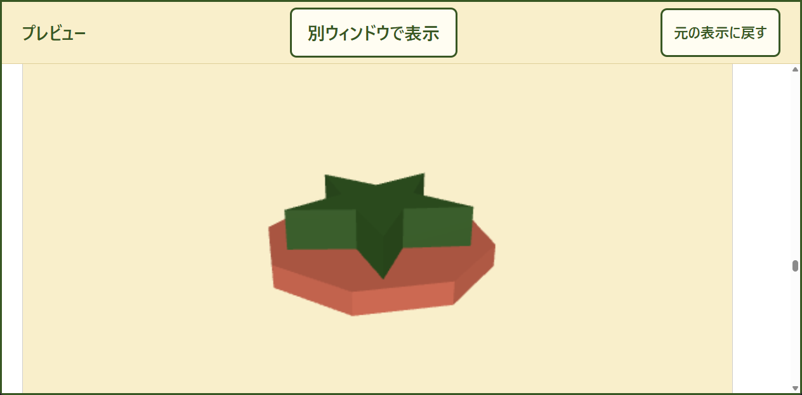
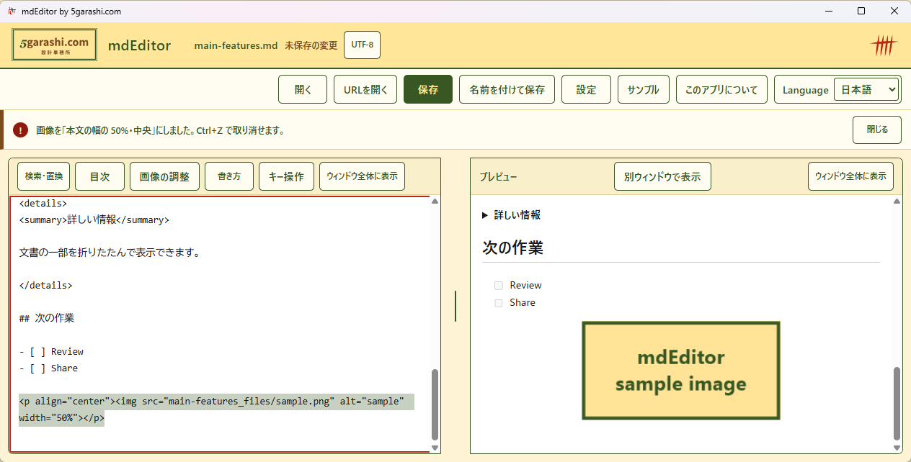

図・3D・地図・動画
Mermaid・Graphviz・数式から、回転できるSTL、GeoJSON、文書内動画まで。

mdEditor · WINDOWS
書きながら仕上がりを確認。
立体を回し、地図を読み、必要な形式で共有。
Windows用・無料。提供版・動作要件はStoreで確認できます。

PDFとWordをMarkdownとして開けます。AIチャットの回答も、書き方の癖を直して表示。プレビューどおりのPDFに、ワンクリックで保存できます。
書きながら横で仕上がりを確認。Mermaid・Graphviz・数式・3Dモデル・地図をオフラインで表示。書き間違いには波線、表は Ctrl+Shift+W で整えます。
Windows用・無料。PDFの取り込みはできる範囲での変換で、段組みやスキャンしたPDFは元に戻りません。AIチャットの回答は、できる範囲で再現します。収録はソースビルド1.0.20です。 開発と動画の制作に、AI（Claude・Codex）の支援を受けています。BGMはCodexで作曲・音源生成したものです。
Mermaid・Graphviz・数式から、回転できるSTL、GeoJSON、文書内動画まで。
連動スクロール、別窓プレビュー、ウィンドウ全体で読む表示。
Word・HTML・メール・CSVなどを開き、PDF・Word・HTML・PNGなどへ保存。
文書の形式や読み込み内容によって、引き継がれる情報は異なります。Wordの色・配置や、Notebookの実行結果は再現しません。
画像はドロップや貼り付けで入れ、50％幅・中央揃えなどに調整できます（画面は1.0.15）。文書と使った画像はZIPでまとめて渡せます。

実際の操作
Windows版を操作した実演です。字幕だけで手順が分かります。
動画を再生できませんでした。下の「動画を保存」からMP4を保存し、動画プレーヤーで開いてください。
再生するとBGMが流れます。 Light Steps — 5garashi.com Design Office / Codex, CC BY 4.0; excerpt repeated and faded. Big Buck Bunny © 2008 Blender Foundation, CC BY 3.0 · Credits. Map: © OpenStreetMap contributors.
ソース版1.0.20の実画面です。字幕・BGM付き、ナレーションなし。外部メディアと地図は許可して収録しました。
まずは1つ
外部画像のない、短いサンプルです。PCに保存して使えます。
まずはこれから。見出しと図の文字を変え、数式・表ごとPDFへ。
Markdownを保存 — 図と数式のメモフローチャート、表、チェックリストで作業の流れを残す。
Markdownを保存 — 文書レビューの手順回答の要点・出典・次の行動を整理する記入用テンプレート。
Markdownを保存 — 回答を整理するメモ回答整理のサンプルは記入用です。mdEditorにAI生成機能はありません。数式・表の値は自動計算されません。
より多くの図を試す既存サンプル文書の編集、図・数式の描画、PDF保存はPC内で処理します。mdEditor自体は文書や個人情報を収集・送信しません。
ネット上の画像・動画・地図は、許可した場合に読み込みます。「URLを開く」は指定したhttpsページを取得します。取得先にはIPアドレス等が伝わります。WebView2の更新・診断はMicrosoftの設定に従います。
プライバシーポリシーを読む5garashi.com DESIGN OFFICE
mdEditorは、5garashi.com設計事務所の開発作品です。文書作成や業務の手順を支える道具、技術システムの開発について、事務所サイトからご相談ください。